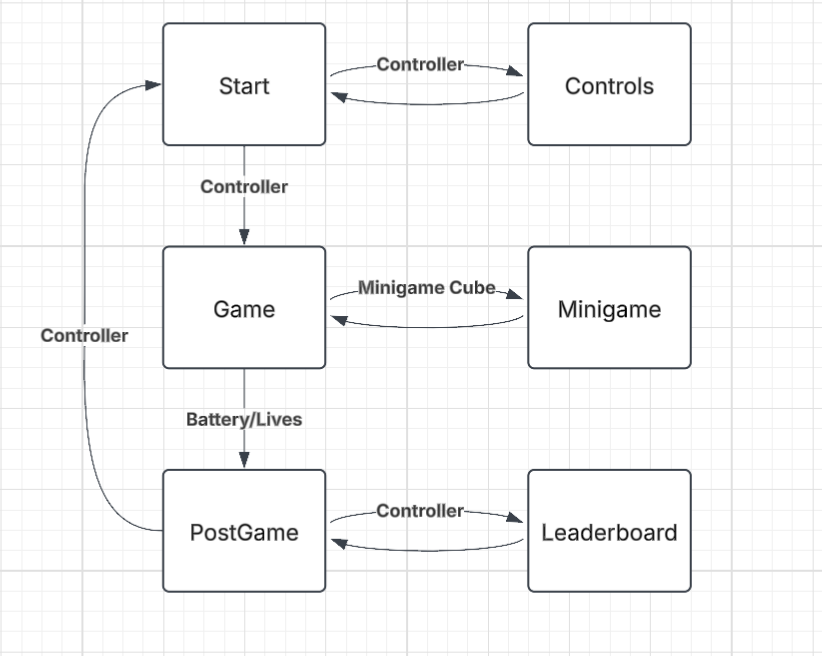

About the Project
Mind Invaders is a retro arcade game inspired by Space Invaders. Its name is an homage to an idea that never came to fruition. However, it developed into a complete project that demonstrates the fundamental concepts learned throughout the EEC 172 Embedded Systems course. Mind Invaders is different from its predecessor in three primary ways. The first is the game has two input methods in an Xbox controller and the CC3200 Launchpad accelerometer. The second is a power management system where different weapons consume power and the player loses if they run out of power. The final addition is a minigame the player can enter where they control the character with the Launchpad accelerometer and have to dodge randomly generated red circles for ten seconds to receive a reward.
Hardware
The primary hardware components are the CC3200 Launchpad with its built-in accelerometer, an OLED display, Xbox controller, and a bluetooth module that helps connect the Xbox controller.
Project Demo
The Team
Ian O'Connell
Fifth year computer science and engineering major.
Austen Simms
Fourth year electrical engineering major.
Project Report
Design
Functional Specification
The game starts at the start game state. Here you have a screen which prompts the user to press X to go to the controls or A to start the game. Once at controls you can press B to go back to the start. Once you press A you enter the main game state. Here the game either transitions to the mingame by shooting a purple cube that pops up or to the post game screen. That transition can happen from the user running out of power or running out of lives. From the end game screen you can either navigate to the start again by pressing A, or go to the leaderboard state by pressing X. The leaderboard state allows you to view the top 4 scores as well as enter your name and submit a score. If your score was high enough it will be immediately available on the leaderboard. From the leaderboard state you can then go back to the post game screen.
System Architecture

The CC3200 is the center of the embedded system. The OLED connects to the Launchpad through SPI and the accelerometer connects with I2C similar to how these things were done in previous labs. In addition to this we connect the HM-10 bluetooth module to the CC3200 with UART. The HM-10 connects to a MacBook through Bluetooth Low Energy and the Xbox controller connects to the MacBook via bluetooth. A python script using pygame detects controller input and through this bluetooth connection the user input can be incorporated into the code written in CCS.
Implementation
Game Objects and Core Functions
Structs are used to define the enemies, spawn locations, bullets, and the cubes. Enemy stores health, coordinates, and previous y for movement. Spawn locations are stored with x positions and an occupied value that can be used to ensure we don’t spawn multiple enemies in the same location. Bullets have a damage value, coordinates, and a previous y for movement. Cubes have coordinates and a color value. We have init functions for each of these structs where the necessary values can be passed in to initialize an object. We use arrays of these structs to store a certain amount of each object. There are 13 spawn locations, 10 enemies, 10 bullets, 1 power cube and 1 minigame cube. We can check if a particular object is inactive with a terminal condition such as an enemy having 0 health, or a bullet being at a particular y coordinate that indicates it is inactive. Along with the init functions we have an update and draw function for each of these objects. Update will change the object’s values to match whatever conditions in the game have changed. Draw will erase an object at the old coordinates and draw it in the new coordinates. With this logic update should almost always be called at least once before draw is called again. Finally each struct has a reset function which sets all the objects back to initial conditions.
SysTick
SysTick plays a major role in this application as the fundamental timer the game operates around. We increased the frequency it ticks at to 10 ms which helps greatly with game feel. If the program is in gameState 0, meaning the player is playing the game, the score will be incremented by 1 with each tick. If the game is being played, either the main game or the minigame, SysCnt will be incremented. This variable is used to set important flags. We also need to check if we are in the minigame using a miniGameOver flag. If we are not in the minigame we want to spawn a mini game cube every time the score passes a multiple of 2000. Enemies will be spawned and moved every time SysCnt gets to 200 and then SysCnt will be reset to 0. This enables the enemies to move on a constant timer where the player can move more frequently then the enemy. We also want to set bullet and player move flags in case we are coming from a state where these things are inactive. If the player is in the minigame whenever SysCnt gets to 200, or every 2 seconds, a flag is set that triggers the spawning of a red circle the player must avoid. If SysCnt gets to 1000 miniGameOver flag is set to 1 to end the game and the nukeCharge flag is set so the player can use the nuke once without consuming power. The final purpose of SysTick is to decrease the player power. We have a usingPower flag that ensures power only decreases while the player is in the main game. If so power decrements by a small margin every tick and should power get to 0 or lower then gameState will be set to 1 to trigger the post game screen.
Main Loop
Initialization sets up system peripherals, including SPI (for display), I2C (for controller input), and UART (for serial communication). Initialize the display using Adafruit_Init(). Connect to a network, sets the time, and establish a TLS connection. Configure UART for reading controller input. Enable the system timer (SysTick) for tracking game events. Once these things are done we enter the main game loop. The game runs in a while(1) loop, continuously checking for player input and updating game elements based on the current gameState. There are 7 game states in total. -2 is the controls menu, -1 is the start menu, 0 means the user is playing the game, 1 is the post game screen, 2 means the user is in the mini game, 3 means they are in the leaderboard and finally 4 means the user is in the menu to submit their score to the leaderboard. All the respective states have a draw function that displays whatever UI is needed in that state. Real time player input is calculated by using getLatestUARTChar() to process the most recent player input.
- Controls Screen (gameState = -2)
- Displays control instructions.
- Pressing 'B' switches to the start screen.
- Start Screen (gameState = -1)
- Shows the game start screen.
- Pressing 'A' starts the game.
- Pressing 'X' returns to the controls screen.
- Main Game (gameState = 0)
- Handles player movement:
- 'L' for left, 'R' for right, '0' for stopping.
- Handles actions:
- 'X' fires bullets.
- 'B' triggers a nuke.
- 'Y' fires laser.
- Updates and draws:
- Player movement.
- Bullets.
- Enemy waves.
- Power-ups and score.
- Handles player movement:
- Game Over (gameState = 1)
- Calls
postGame()to handle post-game logic. - 'A' returns to the start screen.
- 'X' transitions to the leaderboard.
- Calls
- Mini-Game (gameState = 2)
- Uses I2C-based input from the CC3200 Launchpad accelerometer for movement.
- Calculates player movement using accelerometer offsets.
- Checks for collisions with randomly placed circles.
- Grants power-ups based on survival time. 5% power increase for every second survived and if they make it through the full 10 second minigame the player gets a free nuke charge.
- Leaderboard (gameState = 3)
- Displays top four player IDs and scores.
- 'B' returns to the game over screen.
- 'X' transitions to score submission if needed.
- Score Submission (gameState = 4)
- Allows score submission via a cursor.
- 'L' and 'R' move the selection cursor.
- 'A' confirms submission.
- 'B' cancels and returns to the leaderboard.
- 'X' submits the score and returns to the leaderboard.
Flags are utilized heavily to dynamically keep track of what the game is doing and what the player can do. The enemies, player, and bullets have move flags that determine when they should and shouldn’t be updated to a new position. The player has three primary abilities. A default bullet can be shot at no power consumption and will travel in a straight line. Collision detection is done by checking all the y locations the bullet would travel through and if it collides with a power cube, mini game cube, or enemy that target is destroyed along with the bullet and the appropriate effects take place. A laser costs 10% power and destroys all enemies along a column. A nuke costs 75% power and destroys all enemies and cubes on the screen. For any visual components there is a draw and update function. The update function will change any values associated with the object. For example, updating an enemy, bullet, or player will change the coordinates associated with that object. Then when the draw functions are called it will draw over the old position and draw the object in its new location. This enables a massive increase in performance by only updating and drawing the objects that need to be changed in each iteration of the loop. We can also through the use of SysTick allow the player to make several actions before the enemies move again.
AWS
We avoided using device shadows or things for our AWS implementation. Instead we have a DynamoDB table that stores playerIDs and scores. A lambda function defines what happens when POST and GET are called. GET will simply return the entire leaderboard which is constrained to only four playerIDs and scores because that is what cleanly fits on the OLED leaderboard display. POST will check if the score being submitted is greater than any scores in the table. If it is then the new playerID and score are added and the lowest score entry is removed from the table. This means the table only ever stores four values so we can avoid extensive parsing.
Python Program
Challenges
Implementation of the game itself went quite smoothly. With the help of some prior game development experience we were able to implement all the core gameplay mechanics without encountering too many difficulties. However, there was one significant challenge we encountered. The first iteration of the game implementation was utilizing interrupts to detect user input and this proved to be an ineffective strategy. The game was far too unresponsive with this implementation. Our solution was to refactor the code to track game state and in the main while loop continuously check what the most recent button input from the user was. Based on that input, we can change state in the main loop and avoid using interrupts altogether. This had a major improvement on game performance.
The second major challenge was implementing the controller. We had an issue with the Xbox controller having delayed inputs. This was resolved when refactoring the code to only check the most recent button press and change states in main accordingly. The controller input proved to be a major bottleneck that, once solved, a great deal of progress was made in a short period of time.
We had some challenges with integrating AWS in our project. In this case, AI tools proved to be incredibly useful as they helped throughout the debugging process and were capable of providing mostly working GET and POST functions as well as the lambda function we use to parse incoming commands to the DynamoDB table.
Future Work
The major feature that we would have liked to implement is some form of EEG headset. Originally, we had intended to have a headset influence the strength of the player’s abilities and influence how power consumption happens during gameplay. The EEG headset we had access to was too old and cheap to provide reliable data that could be incorporated in a meaningful way. For some context, it assumed the user was brain dead around half of the time. Due to budget constraints, we could not purchase a headset of good enough quality to incorporate.
Scaling difficulty as the player’s score increases is a reasonable thing to continue working on. There is a constraint with how fast the OLED can update the screen if too many pixels need to be changed. However, there could be unique kinds of enemies with varying speeds and health values that increase the game difficulty. In addition to this, game feel could be improved by experimenting with values through a series of play testing experiments. Reducing the amount of pixels the player, enemies, and bullet moves while simultaneously increasing the refresh rate of the screen improves game feel, but we pushed this as far as we could with the hardware we have access to.
Bill of Materials
FROM LAB (free):
- CC3200 Launchpad
- OLED
Purchasable online:
- Xbox Controller ($20-25)
- HM-10 Bluetooth Module ($10)